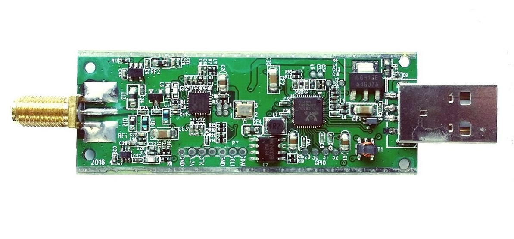

Over the past month, I've been fully immersed in researching the components I need to purchase to build my radio telescope, and I believe I now know everything I need to get started. I'll be using a 2.4 GHz WiFi parabolic grid satellite dish. I know the name sounds confusing, but it's just a dish people put on their roofs to help pick up and boost WiFi from far away. But that's not how I'll be using it. These dishes are also great at picking up hydrogen emissions from space, allowing me to use them as a radio telescope.
A big issue when it comes to radio astronomy is radio noise. I live in an area with strong interfering signals from things like cellular and broadcast FM/TV, so if I just walked outside and tried to pick up hydrogen emissions, I would be bombarded by signals in every direction. That's why I'll need a low-noise amplifier, which will help me focus on the signals I actually want to pick up. Now, to see and record the waves the dish is collecting, I'll be using an RTL-SDR Blog V3 dongle. By plugging one side into my computer and the other into the low-noise amplifier, I can see the signals the dish records on my PC. Below is an image of what it looks like from the inside.
The main challenge so far has been trying to learn what I'll need and how everything works. Building a radio telescope isn't something people just do, so finding a place where I could properly learn the process was grueling. I didn't find one source that told me everything, but over time, as I searched the internet, I figured out what's needed, what's a waste of money, and how to build it so it functions as an actual telescope.
This is only going to be an initial setup. Once I know everything is working as it should, I'll make everything local so it won't have to depend on an external computer. Everything will be combined into a single device that can move the dish, amplify the emissions, record the data, and potentially even map out the Milky Way. That will be the next step after I've built everything.
For now, I can’t get too ambitious. Figuring out the whole process was a challenge of its own, and now it's time to see if I’m ready. I don’t know when all the parts will arrive, but when they do, I’ll record the whole building process from start to finish to make sure you guys don’t miss a single thing. Until then, enjoy the rest of my blogs and stay curious.